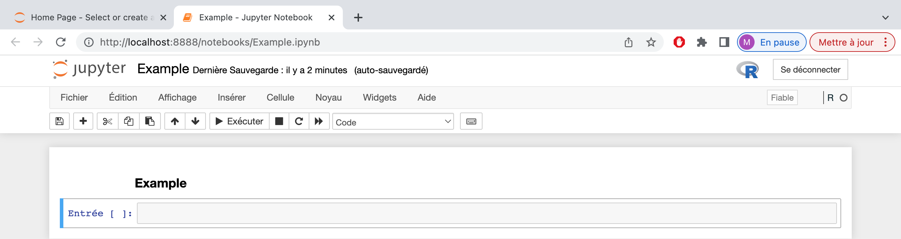
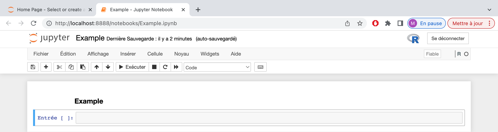

Setting up Jupyter Notebook with R kernel
Prepared by Claire Lepault and Marie Sevestre
Jupyter Notebook is an open-source web application that allows you to create and share documents that contain live code, equations, visualizations, and narrative text. Within a notebook, you can write and execute code snippets in cells, which can be individually executed. Jupyter Notebook supports various programming languages, including Python, R, Julia (whose Jupyter name is derived), and many others, through different kernels.
In this tutorial, we provide command lines to install Jupyter Notebook and R kernel on Ubuntu and macOS.
Installation of Jupyter Notebook
We assume that python3 is already installed on your computer. (You can check by using the command python3 –version in the terminal and eventually download it here.)
To install Jupyter Notebook, you typically use pip the package management system for installing and managing Python packages. By using pip, you ensure thant the required dependencies and components are installed correctly, including Jupyter Notebook.
On Ubuntu and macOS, you can respectively follow the steps :
On Ubuntu (version 22.04, python 3.10.6 tested here) in the computer’s terminal :
To install pip $ sudo apt install python3-pip To install Jupyter $ pip3 install jupyter To open Jupyter Notebook $ jupyter notebookOn macOS (version 12.1, python 3.8.5 tested here) in the computer’s terminal :
To install pip $ install python3-pip To install Jupyter $ pip3 install jupyter To open Jupyter Notebook $ jupyter notebookIf the Jupyter installation was successful, but you are still unable to open Jupyter Notebook, you may need to restart your computer.
Other tips: If you want to check the installed versions of
python3andpipand eventually upgrade them, you can use the following commands in the terminal:To check the installed version of python $ python3 --version To check the installed version of pip $ pip3 --version To make sure that all packages are up-to-date : $ pip3 install --upgrade pip3
At this stage, you can only open a Jupyter Notebook in Python.
You can now follow the tutorial below to install the R kernel so that you can open a Jupyter Notebook in R.
Installation of R kernel
We assume that R is already installed on your computer. (You can download it here using the documentation related to your system. On Ubuntu, the steps proposed by Daniel Weitzel are very useful.)
R kernel is a software component that allows you to run R code and create R notebooks within the Jupyter Notebook interface. In comparison with Rmarkdown, Jupyter Notebook with R kernel provides a web-based interface that allows you to edit and execute code cells interactively. It is great for interactive execution and exploration of code.
On both Ubuntu and macOS:
- You can use the computer’s terminal :
To launch the R console $ R To install the IRkernel packages > install.packages(‘IRkernel') To link IRkernel with Jupyter Notebook > IRkernel::installspec() - Or if you are used to Rstudio, you can work directly in the Rstudio console:
install.packages(‘IRkernel') IRkernel::installspec()
Create a R notebook
You can open Jupyter Notebook from the computer’s terminal using the command:
$ jupyter notebook
If you have well installed IRkernel on your computer, you can now create a R notebook !
 
